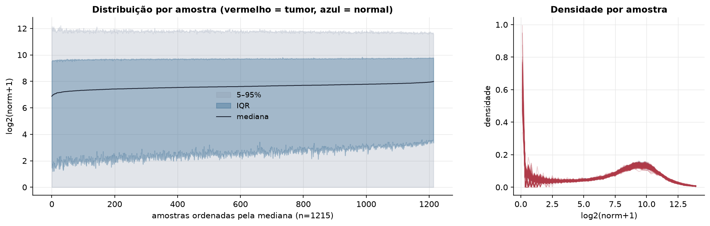
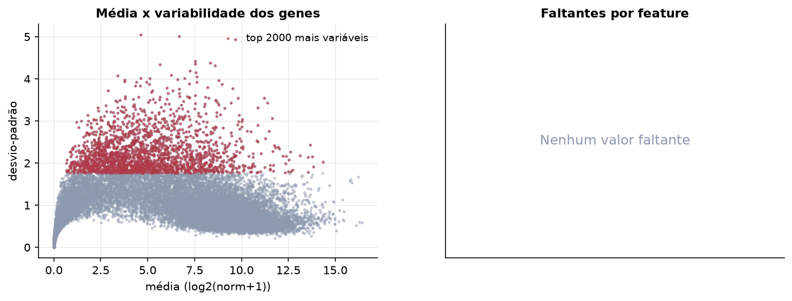
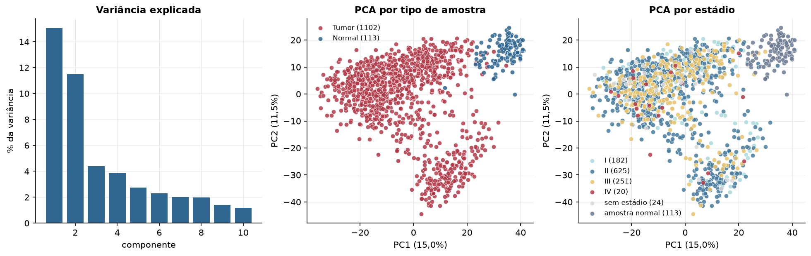
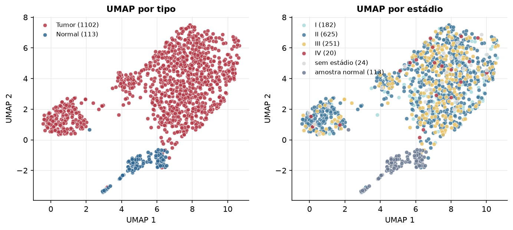
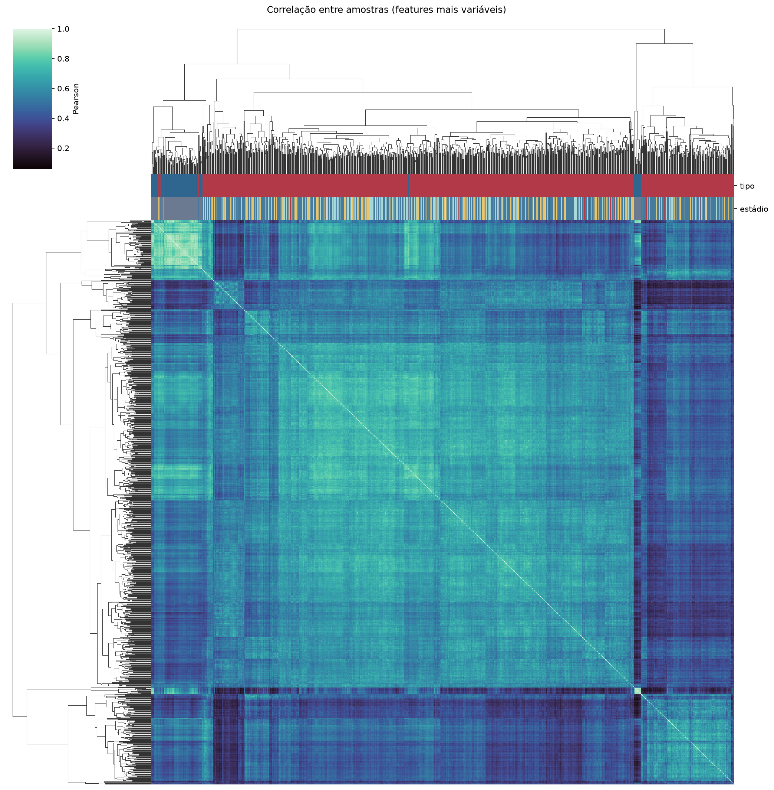
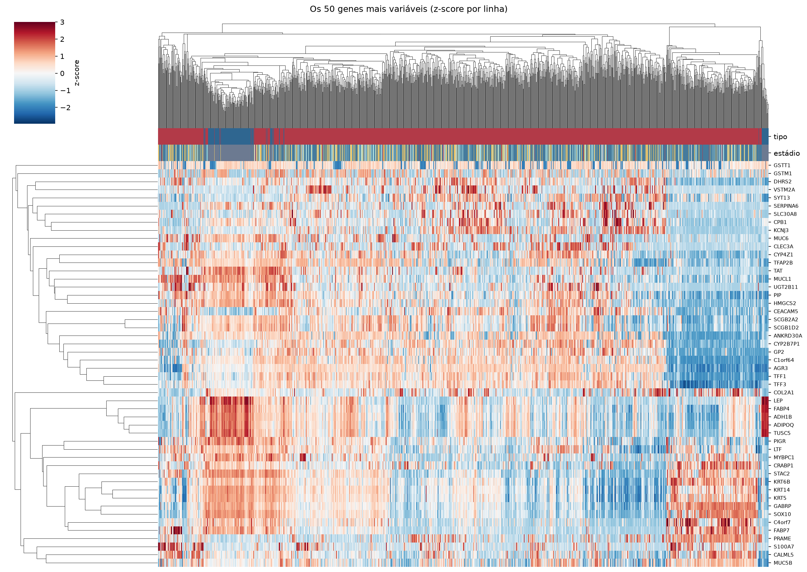
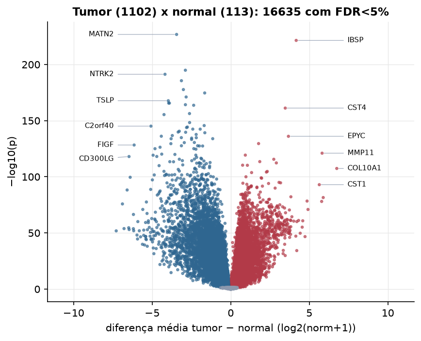
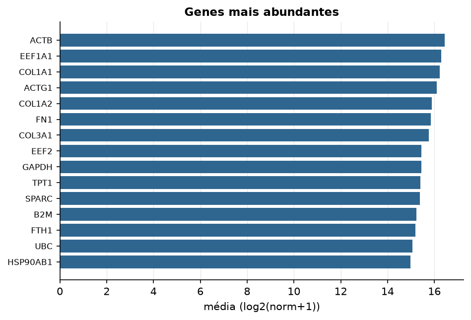

BRCA · RNA-seq (PanCanAtlas)
Illumina HiSeq, RSEM normalizado e corrigido por lote (EB++), log2(x+1) · gerado em 21/10/2026 18:48
20.531genes
1.102amostras tumorais
113amostras normais
0,0%valores faltantes
Fonte: PanCanAtlas EB++ via API do Xena
Estes valores já vêm normalizados e com correção de lote entre plataformas e centros. Servem bem para modelos gaussianos ou redes neurais; para um modelo de contagem use as contagens brutas do GDC.
Principais resultados
- 20.531 genes medidos em 1215 amostras (1102 tumorais e 113 normais); 0,0% dos valores estão faltando.
- Os dois primeiros componentes principais explicam 15,0% e 11,5% da variância das features mais variáveis.
- Correlação mediana entre amostras: 0,56.
- Tumor x normal: 16635 genes diferentes com FDR < 5% (7967 maiores no tumor, 8668 maiores no normal; 113 pacientes têm o par tumor-normal).
- Mais aumentados no tumor: IBSP, CST4, EPYC, OR2B6, MMP11, METTL11B, LOC283867, WBSCR28.
- Mais reduzidos no tumor: MATN2, SPRY2, NTRK2, SCN4B, ANKRD29, GSPT2, HOXA7, TSLP.
- Associações clínicas com p < 0,05 nos componentes principais: PC2 com estádio (p=2e-07); PC1 com sexo (p=0.00012); PC2 com sexo (p=0.0087); PC1 com idade (p=9.4e-12); PC2 com idade (p=0.00012); PC2 com sobrevida (p=0.0056).
- Em mediana, 81,4% dos genes têm expressão acima de log2(norm+1)=1 em cada amostra.
Distribuição dos valores


Estrutura das amostras




Tumor x normal

Features mais diferentes entre tumor e normal
| diferenca_tumor_menos_normal | t | p | fdr | |
|---|---|---|---|---|
| MATN2 | -3.446 | -53.175 | 1.71e-227 | 3.46e-223 |
| IBSP | 4.165 | 50.525 | 3.46e-222 | 3.51e-218 |
| SPRY2 | -2.887 | -58.609 | 1.24e-195 | 8.4e-192 |
| NTRK2 | -4.184 | -50.649 | 5.08e-192 | 2.57e-188 |
| SCN4B | -3.139 | -52.645 | 2.69e-186 | 1.09e-182 |
| ANKRD29 | -3.014 | -47.55 | 2.16e-178 | 7.3e-175 |
| GSPT2 | -1.658 | -35.566 | 2.19e-175 | 6.32e-172 |
| HOXA7 | -2.839 | -44.694 | 8.32e-172 | 2.11e-168 |
| TSLP | -3.975 | -55.376 | 1.85e-168 | 4.16e-165 |
| MAMDC2 | -3.949 | -50.467 | 2.39e-166 | 4.47e-163 |
| IL33 | -3.905 | -43.853 | 2.43e-166 | 4.47e-163 |
| ITM2A | -2.885 | -46.479 | 6.28e-165 | 1.06e-161 |
| NFIB | -2.359 | -40.395 | 1.99e-164 | 3.1e-161 |
| CST4 | 3.468 | 35.006 | 6.48e-162 | 9.37e-159 |
| TMEM220 | -2.624 | -52.912 | 4.95e-157 | 6.68e-154 |
| MME | -4.247 | -50.28 | 4.04e-156 | 5.11e-153 |
| CACHD1 | -2.619 | -46.345 | 4.98e-149 | 5.93e-146 |
| GPRC5B | -1.691 | -36.863 | 2.33e-146 | 2.62e-143 |
| C2orf40 | -5.078 | -45.221 | 7.66e-146 | 8.16e-143 |
| NR3C2 | -2.759 | -45.389 | 4.88e-145 | 4.94e-142 |
| C5orf4 | -2.813 | -41.504 | 1.44e-144 | 1.39e-141 |
| PCDHGB7 | -2.415 | -38.001 | 3.44e-143 | 3.17e-140 |
| LRIG3 | -1.944 | -37.973 | 3.62e-143 | 3.19e-140 |
| RGN | -3.275 | -40.141 | 2.54e-141 | 2.15e-138 |
| TGFBR3 | -3.347 | -42.91 | 1.44e-140 | 1.17e-137 |
| HOXA4 | -2.871 | -47.027 | 2.24e-140 | 1.74e-137 |
| SGCE | -1.649 | -32.678 | 5.97e-140 | 4.48e-137 |
| TINAGL1 | -2.2 | -37.726 | 2.03e-138 | 1.47e-135 |
| CNTNAP3 | -3.72 | -41.645 | 1.83e-137 | 1.28e-134 |
| FMO2 | -4.419 | -44.75 | 7.32e-137 | 4.94e-134 |
Associação com variáveis clínicas
p-valores da associação dos três primeiros componentes principais (só tumores) com estádio (Kruskal-Wallis), sexo (Mann-Whitney), idade (Spearman) e sobrevida global (Cox univariado).
| estádio (Kruskal) | sexo (Mann-Whitney) | idade (Spearman) | sobrevida OS (Cox) | |
|---|---|---|---|---|
| PC1 (13,9%) | 0.558 | 0.000116 | 9.38e-12 | 0.649 |
| PC2 (10,0%) | 1.99e-07 | 0.009 | 0.000123 | 0.006 |
| PC3 (3,8%) | 0.064 | 0.392 | 0.058 | 0.25 |
Mais abundantes
